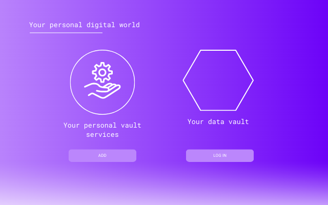

Over datakluizen, een app-store en privacyvriendelijk data delen met externe services
Een longread over hoe datakluizen kunnen worden uitgebreid met persoonlijke applicaties via een app-store, en een scenario hoe privacyvriendelijk data delen met externe services kan worden gerealiseerd, bijvoorbeeld mediaservices.

Lees artikel